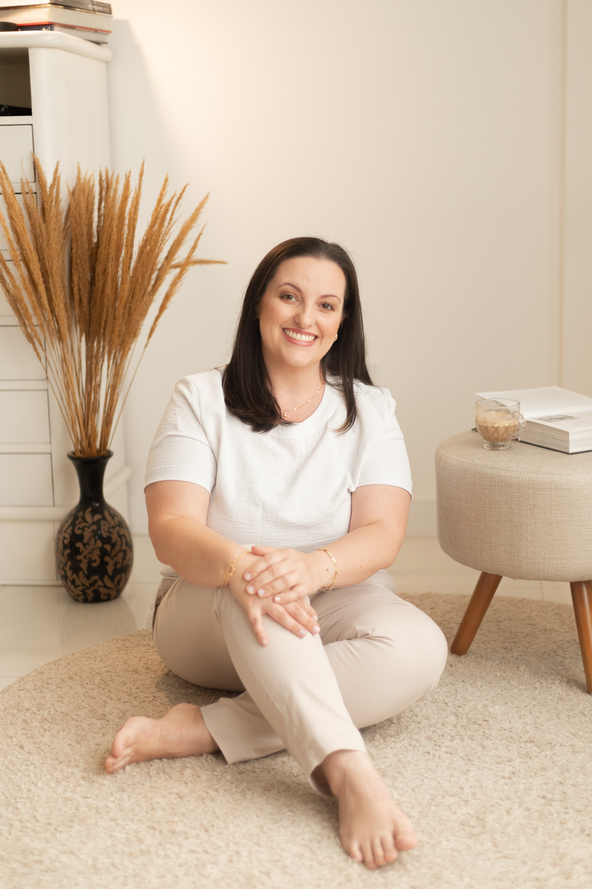
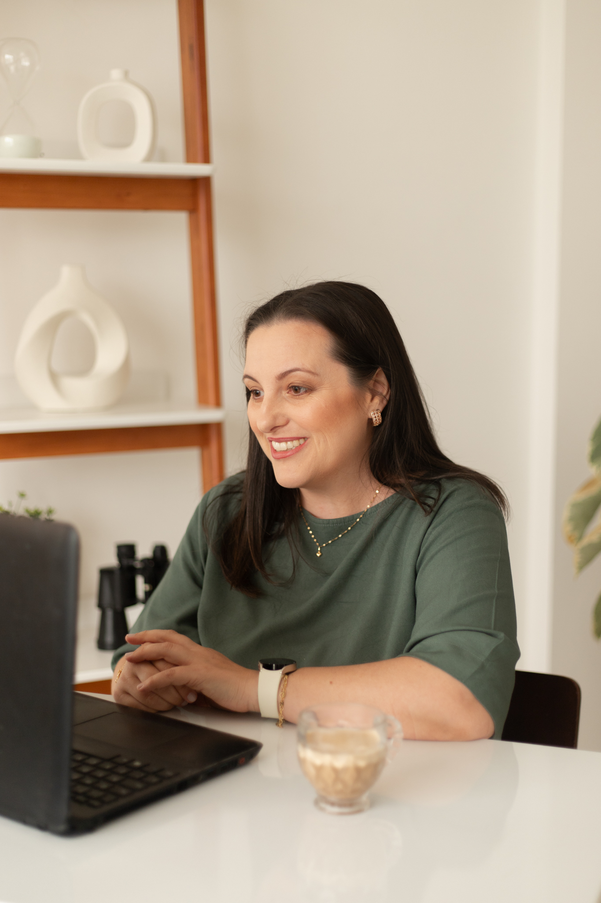
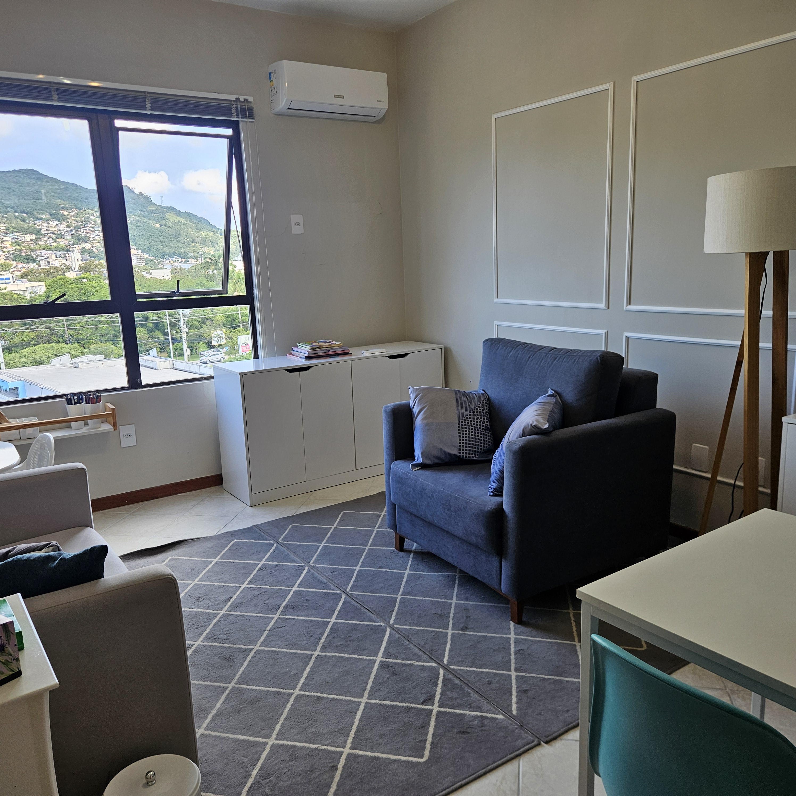

i.
Mente
e Corpo
- Ansiedade e crises de pânico
- Insônia e distúrbios do sono
- Depressão e vazio
- Estresse crônico
ARIANA MARAFON CRP XX/XXXX TCC
Na Terapia Cognitivo-Comportamental, trabalhamos juntos para compreender seus padrões de pensamento e construir caminhos mais conscientes.
Psicologia clínica
para mulheres em
transição
quando procurar
i.
ii.
iii.
A psicoterapia é o caminho para superar seus desafios atuais e encontrar o equilíbrio emocional que você merece.
Quero começar minha terapiaabordagem
A terapia é o espaço onde você se reencontra com versões de si que ainda precisam ser ouvidas.
A TCC é uma abordagem prática, estruturada e baseada em evidências, com foco no presente. Trabalha na identificação e modificação de padrões que impactam suas emoções e comportamentos.
Na Terapia Cognitivo-Comportamental, trabalhamos juntos para compreender seus padrões de pensamento e construir caminhos mais leves, conscientes e alinhados com quem você deseja ser. Em cada sessão — no consultório ou online — o processo é conduzido de forma colaborativa, respeitando seu ritmo e garantindo um ambiente seguro e acolhedor.
quem é
Acredito profundamente na força de transformação que existe dentro de cada pessoa. Minha trajetória me ensinou que a vida exige cuidado, presença e, acima de tudo, ferramentas certas para lidar com os momentos de instabilidade.

15+
Anos em gestão de pessoas na tech
Trago para a clínica uma visão estratégica sobre carreira, liderança e a pressão do ambiente corporativo. Entendo de perto o que significa equilibrar ambição profissional e saúde emocional.
∞
Transformação da maternidade
Vivi na pele as transformações do puerpério. Hoje acolho mulheres que buscam reencontrar sua identidade e força nesse momento intenso.
Após me tornar mãe, minha perspectiva se expandiu. Vivi na pele as transformações do puerpério, o que me motivou a mergulhar nos estudos sobre essa fase. Hoje, acolho mulheres que buscam reencontrar sua identidade e força nesse momento tão intenso.
Acredito no potencial único de cada indivíduo. Meu trabalho é garantir que você não apenas supere desafios, mas reconheça a sua melhor versão.
— Ariana
depoimentos
“Procurei a Ariana num momento muito difícil da minha vida. Ela me ajudou muito a passar dessa fase. Me deixou à vontade para que eu pudesse me abrir. Me ajudou muito a refletir sobre a vida e a mim mesmo. Profissional pontual, competente e bem organizada. Sempre disposta em me ajudar a melhorar como pessoa.”
Thiago P. ★★★★★
“Terapeuta perfeita, cria um ambiente acolhedor e sincero. Profissional tão incrível que saio das sessões sempre motivada.”
Gabriela C. ★★★★★
“Ao longo de nossas consultas fomos construindo uma relação de confiança que está me possibilitando perceber novos caminhos para lidar com situações cotidianas. Psicóloga incrível: pontual, atenciosa, inteligente, prestativa.”
Thayse Mann ★★★★★
“Excelente profissional! Agradeço profundamente por sua empatia e compreensão, me trouxe muita segurança e força. Sua sabedoria e paciência me ajudaram.”
Andreza F. ★★★★★
“A Ariana tem uma escuta ativa e sempre traz ideias para melhorar a minha relação com as pessoas. Sempre saio das nossas conversas com novos aprendizados sobre a vida e sobre mim. Recomendo demais, principalmente para mães!”
Fernanda ★★★★★
onde encontrar

Sessões online com a mesma profundidade do presencial. Atendo em todo o Brasil.

Consultório em Florianópolis.
R. Lauro Linhares, 2123 — Sala 113
Trindade · Florianópolis · SC
Ver no mapa →